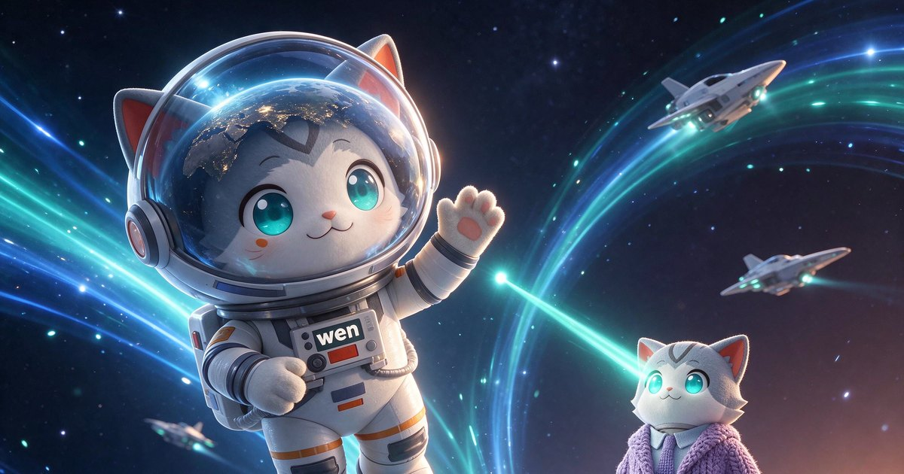

Compare WEN with Any Solana Token: Read the Chain, Then Decide
Almanac news Written by the almanac itself. Every claim links to a page, a file or a check you can repeat.

Names, tickers and logos can be copied in a minute. The powers written into a token cannot hide: they sit in the mint, on the public chain, for anyone to read. Today the almanac opens a tool that reads them for you. Compare WEN with any Solana token: pick a token or paste any mint address, and the page reads WEN and that token straight from Solana and lines them up, side by side.
We do not tell you what to think. We give you the same facts we use, in plain words, with the way to check every one of them. Your path and your opinion stay yours.
What the chain says: 14 properties
Who can still create new tokens. Who can freeze a holder. Whether someone can move or burn anyone’s tokens (a permanent delegate). Whether a fee is taken on every transfer, or a program runs on every transfer (a transfer hook). Whether the token can be paused, closed or made non-transferable. Where its name and picture live. Rows that differ are tinted, keys that can still act are counted.
Each row has a What it means button: one or two sentences in plain words and, where the almanac has one, a picture story that explains the idea with an image. Read the row, open the meaning, look at the picture, then decide what matters to you.
Built around WEN, checked live
WEN started as a poem minted as the first NFT on the Wen New Standard and split into one trillion pieces. The tool reads the two programs the almanac records around it: the WNS program and its royalty program, which pays creators through a transfer hook. It says whether both are live, executable code on Solana right now, with the slot of the reading.
20 things the almanac has recorded
The chain shows what a token can do. The almanac adds what WEN has done: the poem behind the supply, the open standard and library, the airdrop to over a million wallets, the burn of unclaimed tokens, the weekly mint check, the free tools for shops, the open lab and the quiz. Each point carries its status in the trust chain (verified or reported), the almanac page with its sources and a picture story. For the compared token these rows say only “No record in the Wen Almanac”: it means we have not recorded it, never that the token lacks it.
In the open encyclopedia
The tool also asks the public IQ.wiki encyclopedia whether a page exists, for WEN source and for the compared token. It calls a page found only when the page lists the same mint address or was matched by hand in the almanac record; a page with only the same name is shown as related, with a note. When nothing is found, it says so and invites you to search yourself.
How to use it
- Open Compare WEN and press one of the buttons (BONK, JUP, WIF, POPCAT, MEW, USDC, PYUSD, JitoSOL), or paste any mint address.
- Watch the steps: WEN is read, then the token, then the programs around WEN, then IQ.wiki.
- Open What it means on the rows you care about.
- Press Copy link to share the same check; anyone who opens it repeats the reading themselves.
Open by design
- Read-only: one request type to Solana,
getAccountInfo. No wallet, no signature, no connection. - Free public nodes in turn (PublicNode, then dRPC, then the Solana Foundation), or your own RPC address.
- No prices, no rankings, no scores: only what the chain and the almanac record say.
- The code and its test are in the repository: compare-wen.js, almanac-record.json, iqwiki-record.json, the test.
Try it now
⚖ Compare WEN with any Solana token →
Also: the quiz · Wen Media · Wen Open Lab · all sources
Questions people ask
Does it say which token is better?
No. It shows what each token allows and what the almanac has recorded. What is useful depends on what you need.
Can it touch my wallet?
No. It only reads two public mint accounts and two program accounts. It never asks for an address of yours or a key.
Why is a known token “not found” on IQ.wiki?
Pages there often use a project name instead of the ticker. Type the token name in the optional field, or search IQ.wiki yourself.
Spoken by Wen, for the community. Texts CC BY 4.0, code Apache-2.0. Educational content, not financial, tax or legal advice.